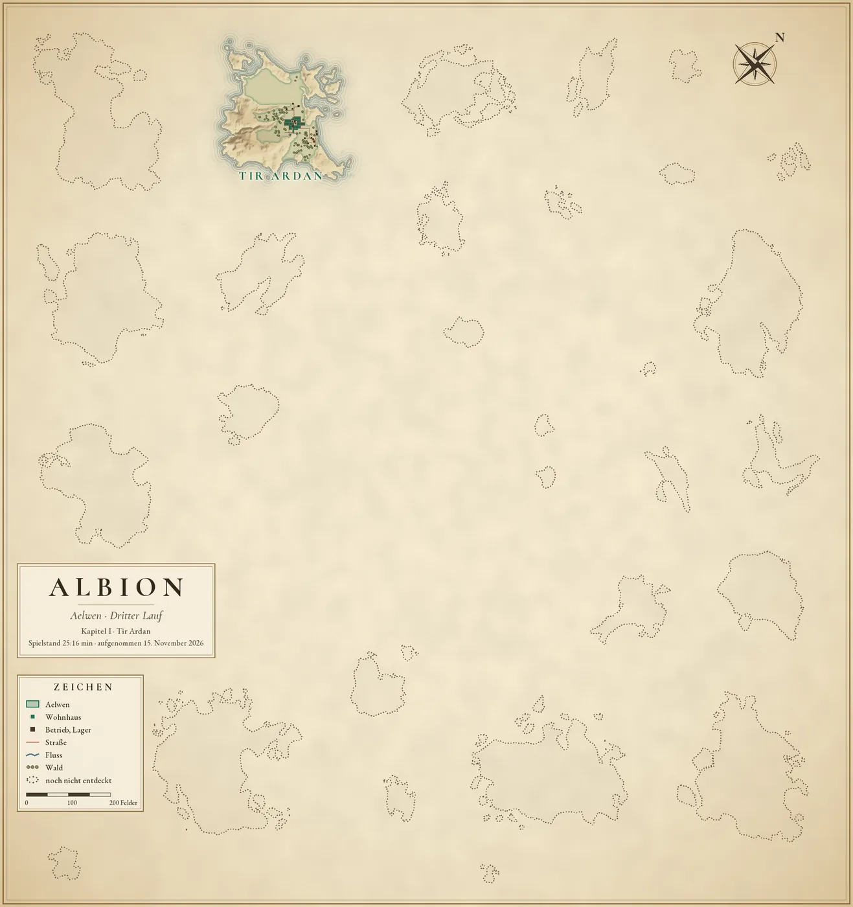

Anno 117 · Pax Romana · Dritter Lauf
Die Karte
Die Provinz zum Ende jedes Kapitels
Jede Karte zeigt die Provinz so, wie sie im letzten Spielstand vor dem Ende eines Kapitels aussieht. Mit den Ziffern wählst du das Kapitel; ein Klick auf die Karte öffnet sie in voller Größe.

Kapitel I Tir Ardan
0:00 bis 25:16 min Spielzeit · gezeichnet nach dem Spielstand bei 25:16 min, aufgenommen am 15. November 2026
Karte von Albion zum Ende von Kapitel I: Aelwens Insel Tir Ardan. Entdeckt sind 1 von 19 Inseln.

Zeichen der Karte
- Aelwen
- Wohnhaus, in der Farbe des Besitzers
- Betrieb oder Lager
- Straße
- Fluss
- Wald
- Insel, die noch nicht entdeckt ist
Wie die Karte entsteht
Belegt
- Aus dem Spielstand: Lage und Drehung jeder Insel, Wohnhäuser, Betriebe und Lager, Straßen, wem eine Insel gehört und welche Inseln schon entdeckt sind.
- Aus den Inseldaten des Spiels: Küsten, Höhen, Flüsse und Wald. Der Wald folgt der Vorlage der Insel; wo gebaut ist, fehlt er.
- Namen wie im Spiel. Inseln, die der Spieler umbenannt hat, tragen den neuen Namen ab der Umbenennung.
Gezeichnet für die Chronik vom Anno-Monitor auf dem Rechner des Spielers: Pergament, Wasserlinien, Schummerung, Farben und Schrift. Bilder aus dem Spiel sind nicht verwendet. Jede Karte nennt die Spielzeit ihres Spielstands und den Tag der Aufnahme.